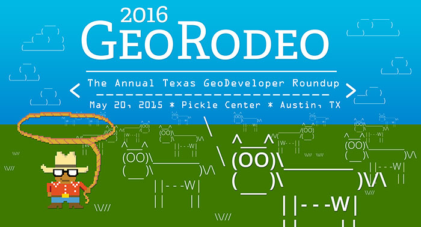

	<table style="font-family: Helvetica, sans-serif; width: 700px; margin: 0 auto; font-size: 14px; line-height: 1.8em">
	<tr>
	<td>
	<a href="https://tnris.org/georodeo/2016/"></a>

    <h1 style="margin-top: 20px; font-size: 40px; font-family:'Lucida Console', Monaco, monospace;">Code, Code on the Range</h1>
        <p style="font-size: 24px;">You&#39;re invited to the <a href=
            "https://tnris.org/georodeo/2016/" style="text-decoration: none; color: #3399ff;">2016 Texas GeoRodeo</a> on May 20th, 2016. Hosted by <a href="http://www.tnris.org" style="text-decoration: none; color: #3399ff;">TNRIS</a>, It&#39;s FREE and conveniently located at the J.J. Pickle Research Campus.</p>

    <p>Join a group of geodevelopers, coders and other Texas GIS/geospatial developers who would like to learn new tips and techniques for open data, open source and commercial GIS applications to incorporate into their work.</p>


    <h2 style="font-size: 30px; font-family:'Lucida Console', Monaco, monospace;">KEYNOTE: Waldo Jaquith, US Open Data</h2>
    <p> Waldo Jaquith is the director of <a href="https://usopendata.org/">U.S. Open Data</a>, an organization building the capacity of open data and supporting government in that mission. Previously, he worked for the White House Office of Science and Technology Policy on open data initiatives.</p>
   
    <h2 style="font-size: 30px; font-family:'Lucida Console', Monaco, monospace;">Other Confirmed Speakers</h2>
    <p><ul>
        <li>John Gravois, Esri</li> 
        <li>Mateo Clarke, Open Austin</li>
        <li>Santiago Giraldo, CartoDB</li>
        <li>Paige Bailey, Chevron</li>
        <li>Ben Guhin, City of Austin</li>
        <li>John Clary, City of Austin</li>
    </ul>
    </p>
    <hr style="clear: both; width: 100%;">
<h2 style="font-size: 30px; font-family:'Lucida Console', Monaco, monospace;">Sponsors</h2>
        <p><a href="http://www.esri.com/"></a><a href="http://geospatialtraining.com/"></a><a href="https://cartodb.com/"></a></p>
            <p>
            <a style="display: block; margin:0 auto; margin-top: 15px; padding: 10px; background: #589c2b; border-radius: 5px; color: #fff; text-decoration: none; font-size: 20px; width: 50%; text-align: center;" href="https://tnris.org/georodeo/2016/become-a-sponsor/" target="_blank"> Become a Sponsor</a>
        </p>

    <p style="text-align: center;"><strong>Questions?</strong> Contact Kathy Wilson at <a href="mailto:kwilson@cmpmanagement.com" title="email Carolyn Price for questions">kwilson@cmpmanagement.com</a> or 512-258-7474.</p>
</td>
</tr>
</table>
